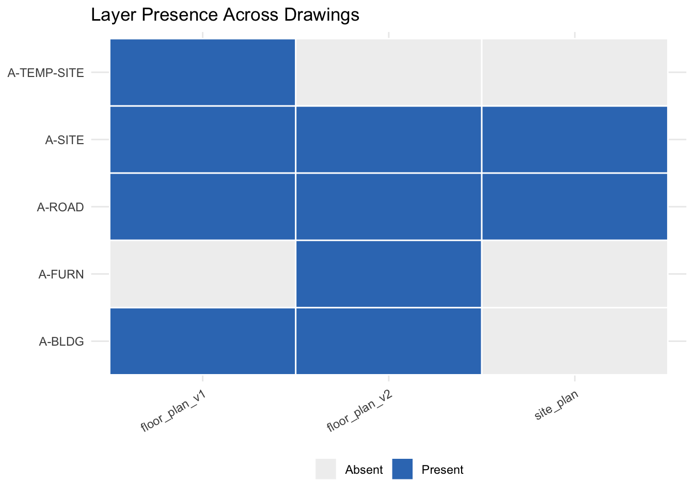
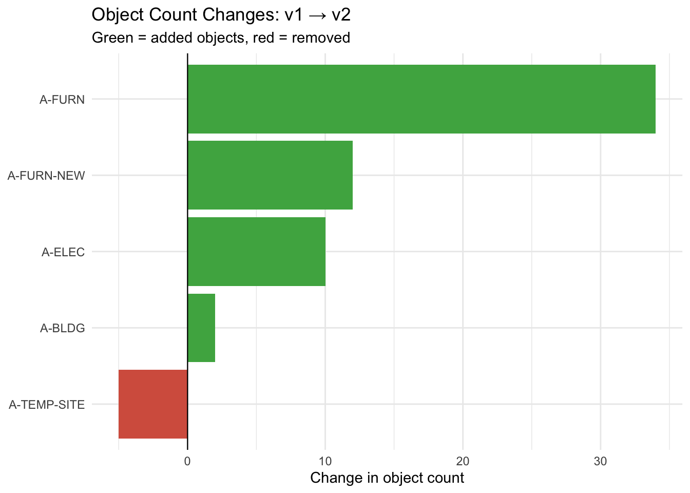

library(AutoDeskR)
library(dplyr)
resp <- getToken(id = Sys.getenv("client_id"),
secret = Sys.getenv("client_secret"),
scope = "data:read data:write")
myToken <- resp$content$access_token
dwg_files <- c("floor_plan_v1.dwg", "floor_plan_v2.dwg", "site_plan.dwg")
urns <- sapply(dwg_files, function(f) {
resp <- uploadFile(file = f,
token = myToken,
bucket = Sys.getenv("bucket"))
resp$content$objectId
})14 Cross-Drawing Comparison
Got a drawing set? Multiple revisions? Discipline packages from different consultants? This chapter shows how to compare their layer structures systematically, what layers were added, what was removed, and where the object counts changed most between versions.
14.1 Upload Multiple Drawings
Upload each DWG to the same OSS bucket (see Data Management):
14.2 Extract Layer Sets
A helper function wraps the translate → poll → tree chain for one file and returns its layer names:
get_layers <- function(urn, token) {
enc_urn <- jsonlite::base64_enc(urn)
translateSvf(urn = enc_urn, token = token)
repeat {
if (checkFile(urn = enc_urn, token = token)$content$status == "success") break
Sys.sleep(5)
}
meta <- getMetadata(urn = enc_urn, token = token)
guid <- meta$content$data$metadata[[1]]$guid
tree <- getObjectTree(guid = guid, urn = enc_urn, token = token)
root <- tree$content$data$objects[[1]]
layer_nodes <- Filter(function(n) grepl("^Layer:", n$name), root$objects)
sub("^Layer: ", "", vapply(layer_nodes, `[[`, character(1), "name"))
}
layer_sets <- lapply(urns, get_layers, token = myToken)14.3 What Changed?
setdiff() pinpoints additions and removals:
added <- setdiff(layer_sets[["floor_plan_v2.dwg"]],
layer_sets[["floor_plan_v1.dwg"]])
removed <- setdiff(layer_sets[["floor_plan_v1.dwg"]],
layer_sets[["floor_plan_v2.dwg"]])
cat("Added: ", paste(added, collapse = ", "), "\n")
#> Added: A-FURN-NEW, A-ELEC-EV
cat("Removed:", paste(removed, collapse = ", "), "\n")
#> Removed: A-TEMP-SITE14.4 Presence Matrix
Build a tidy data frame showing which layers appear in which drawings:
all_layers <- unique(unlist(layer_sets))
presence_df <- data.frame(layer = all_layers)
for (nm in names(layer_sets)) {
presence_df[[nm]] <- all_layers %in% layer_sets[[nm]]
}14.5 Layer Presence Heatmap
A heatmap is the clearest way to show presence/absence across many drawings:
Warning: package 'ggplot2' was built under R version 4.4.3ggplot(heat_df, aes(x = drawing, y = layer, fill = present)) +
geom_tile(colour = "white", linewidth = 0.5) +
scale_fill_manual(values = c("FALSE" = "#f0f0f0", "TRUE" = "#367ABF"),
labels = c("FALSE" = "Absent", "TRUE" = "Present")) +
labs(title = "Layer Presence Across Drawings",
x = NULL, y = NULL, fill = NULL) +
theme_minimal() +
theme(axis.text.x = element_text(angle = 30, hjust = 1),
legend.position = "bottom")
14.6 Object Count Changes
Go one level deeper: not just whether a layer exists, but how many objects it contains and how that changed:
get_layer_counts <- function(urn, token) {
enc_urn <- jsonlite::base64_enc(urn)
meta <- getMetadata(urn = enc_urn, token = token)
guid <- meta$content$data$metadata[[1]]$guid
data_resp <- getData(guid = guid, urn = enc_urn, token = token)
lapply(data_resp$content$data$collection, function(obj) {
data.frame(layer = obj$properties[["Layer and Material"]][["Layer"]],
stringsAsFactors = FALSE)
}) |> do.call(what = rbind) |> count(layer, name = "n_objects")
}
counts_v1 <- get_layer_counts(urns[["floor_plan_v1.dwg"]], myToken)
counts_v2 <- get_layer_counts(urns[["floor_plan_v2.dwg"]], myToken)
comparison <- full_join(counts_v1, counts_v2, by = "layer",
suffix = c("_v1", "_v2")) |>
mutate(change = replace_na(n_objects_v2, 0L) -
replace_na(n_objects_v1, 0L)) |>
arrange(desc(abs(change)))
comparison
#> layer n_objects_v1 n_objects_v2 change
#> 1 A-FURN NA 34 34
#> 2 A-FURN-NEW NA 12 12
#> 3 A-ELEC 8 18 10
#> 4 A-BLDG 21 23 2
#> 5 A-TEMP-SITE 5 NA -514.7 Change Waterfall Chart
A waterfall chart makes the direction and magnitude of each change immediately readable:
ggplot(comparison,
aes(x = reorder(layer, change),
y = change,
fill = change > 0)) +
geom_col(show.legend = FALSE) +
geom_hline(yintercept = 0, linewidth = 0.4) +
scale_fill_manual(values = c("TRUE" = "#4CAF50", "FALSE" = "#d6604d")) +
coord_flip() +
labs(title = "Object Count Changes: v1 → v2",
subtitle = "Green = added objects, red = removed",
x = NULL, y = "Change in object count") +
theme_minimal()